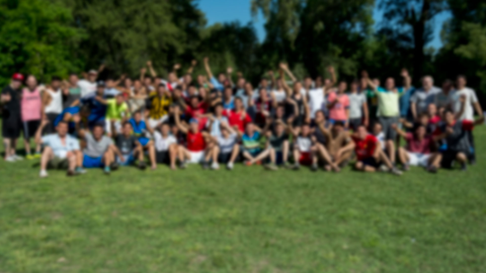
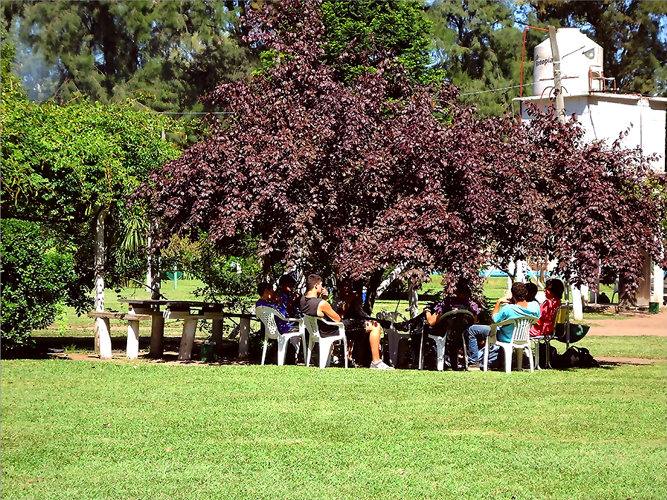

Comunidad Terapéutica y Centro de Rehabilitación en Adicciones
Más de 30 años de trayectoria ininterrumpida en el tratamiento residencial de adicciones, brindando un entorno profesional y humano dedicado a la recuperación integral.

Más de 30 años acompañando procesos de cambio
Nuestra institución se fundamenta en tres décadas de experiencia ininterrumpida en el abordaje de consumos problemáticos. La solidez de nuestra trayectoria nos permite ofrecer un marco de contención seguro, donde la rigurosidad clínica se une al respeto profundo por la dignidad de cada persona.
Cuarta Opción es un centro especializado que opera bajo el modelo de Comunidad Terapéutica. Nuestra misión es brindar las herramientas necesarias para que el individuo pueda reconstruir su identidad y sus vínculos sociales en un entorno protegido.

Pilares Institucionales
Profesionalismo
Rigurosidad clínica y un equipo interdisciplinario comprometido con la excelencia en el tratamiento.
Acompañamiento
Respeto absoluto por la dignidad humana y contención constante en cada etapa del proceso.
Ética y Reinserción
Transparencia institucional y un enfoque orientado a la plena reinserción social del individuo.
Abordaje Residencial: Internación
Modalidad de tratamiento
Contamos con una modalidad exclusiva de internación, diseñada para proporcionar una inmersión terapéutica completa, alejada de los factores de riesgo y orientada exclusivamente a la recuperación bajo supervisión profesional constante.
Explorar el Programa TerapéuticoEspacio de Información y Reflexión
Acceda a recursos educativos sobre salud mental y el proceso de recuperación en nuestro blog institucional.
Ir al Blog